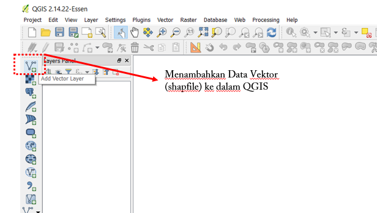
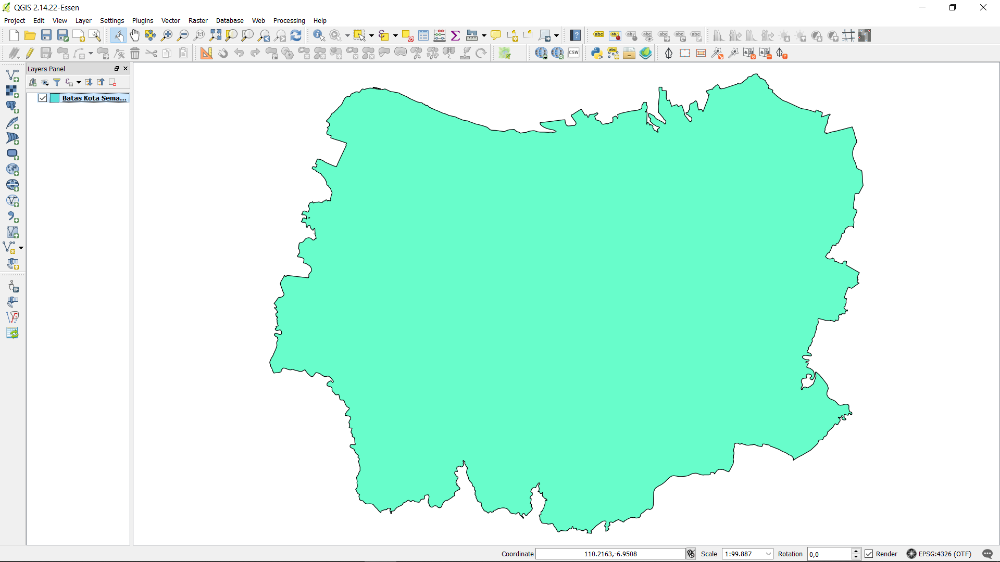
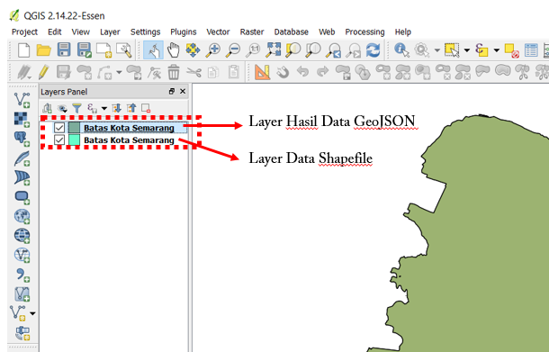
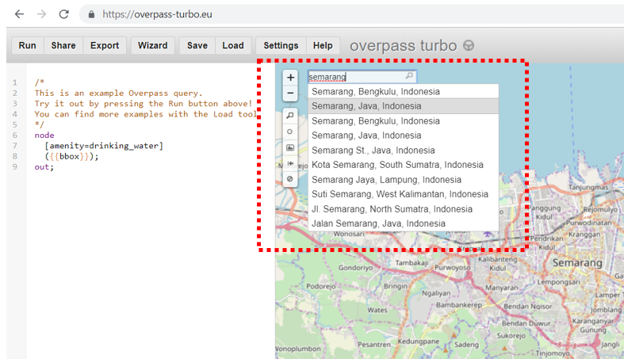
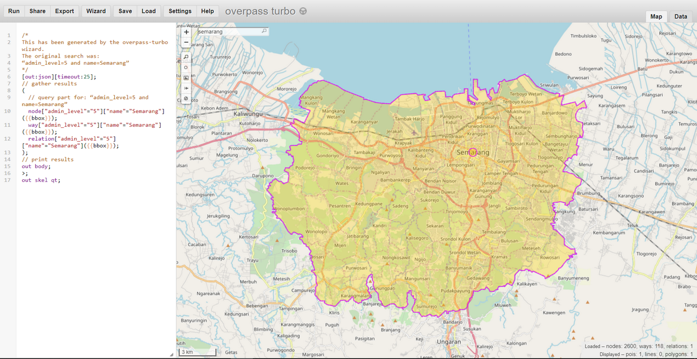
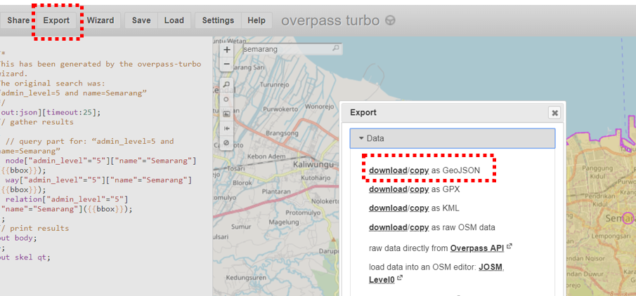
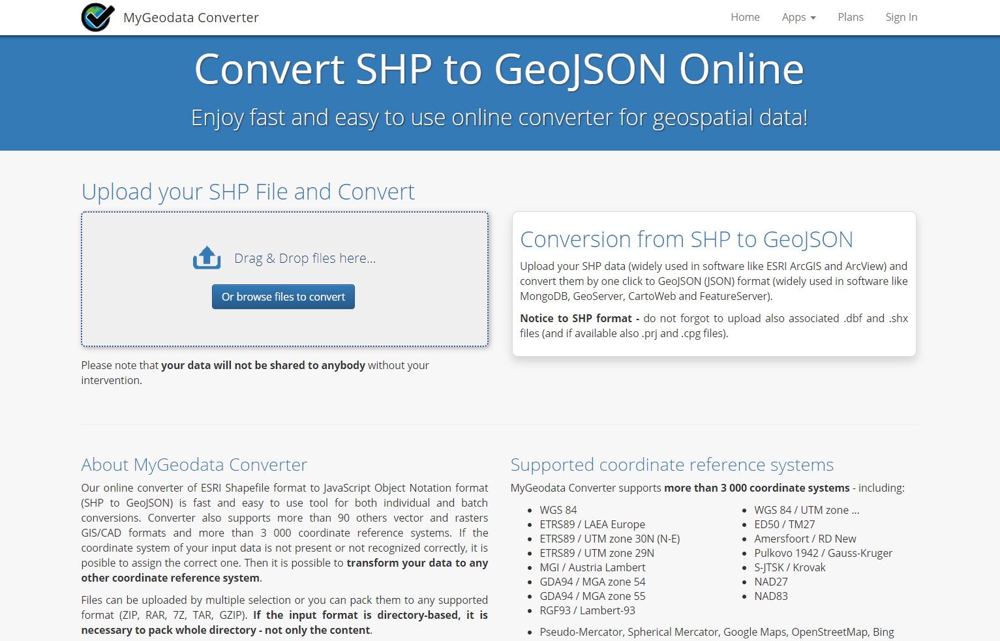
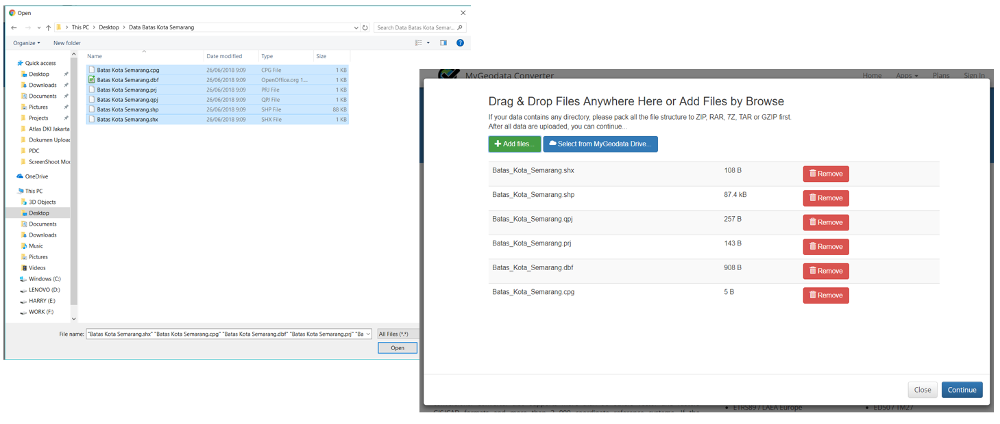
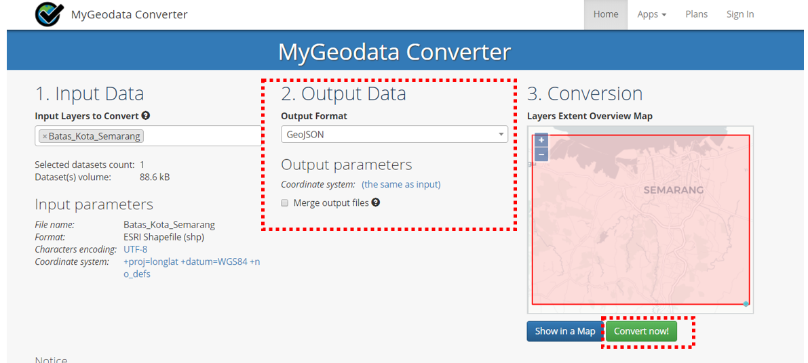
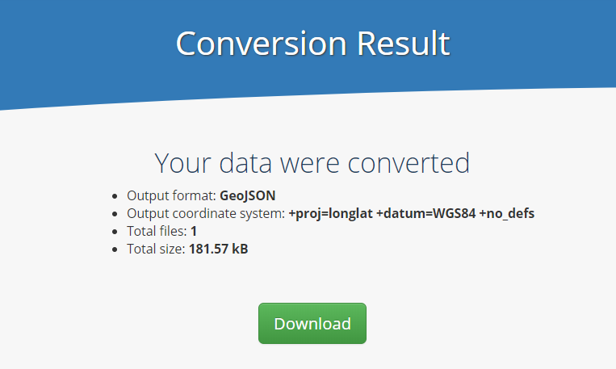

Konversi Data Shapefile ke GeoJSON
Download page as PDFTujuan Pembelajaran: * Memahami Pengertian Data GeoJSON * Mengetahui Melakukan Konversi Shapefile ke GeoJSON dengan QGIS * Mengetahui Cara Mendapatkan GeoJSON dengan Overpass Turbo * Mengetahui Melakukan Konversi Shapefile ke GeoJSON dengan GeoData Converter
Jika Anda tidak memiliki latar belakang pendidikan di bidang geografi ataupun tidak terlalu familier dengan Sistem Informasi Geografi (SIG) maka format GeoJSON ini mungkin terdengar asing bagi Anda. Akan tetapi, Anda tidak perlu khawatir dengan hal tersebut karena mendapatkan data spasial dengan format GeoJSON tidak sesulit yang Anda kira. GeoJSON dapat diperoleh dengan mengubah atau melakukan konversi dari data spasial yang sudah Anda miliki seperti shapefile, keyhole markup language (.kml) maupun hasil GPS yaitu .gpx . Dalam modul ini Anda akan mempelajari pengertian dari data GeoJSON hingga beberapa alat yang dapat membantu Anda untuk melakukan konversi data spasial khususnya shapefile ke dalam format GeoJSON.
I. Pengertian Data GeoJSON
GeoJSON, yang merupakan modifikasi dari Java Script Object Notation (JSON), adalah sebuah format data spasial yang sederhana. Berbeda dengan format spasial yang lain seperti shapefile, GeoJSON menampilkan bentuk spasial dari suatu data dengan ukuran yang lebih ringan tetapi tetap membawa informasi atribut dari data tersebut.
GeoJSON dapat berupa titik (point), garis (line), area (polygon) dimana dapat merepresentasikan dari suatu objek yang ada di permukaan bumi. Karena sifatnya yang sederhana dan merupakan modifikasi dari suatu bahasa program, GeoJSON lebih sering digunakan untuk pengolahan Sistem Informasi Geografi (SIG) bersifat web maupun situs-situs yang menggunakan SIG untuk melakukan visualisasi data spasial seperti Mapbox, Leaflet, OpenLayer dan bahkan beberapa situs yang disediakan oleh Humanitarian OpenStreetMap Team (HOT) seperti HOT Export, Tasking Manager dan Map Campaigner.
II. Konversi Shapefile ke GeoJSON dengan QGIS
Dengan menggunakan QGIS, Anda dapat melakukan konversi data shapefile baik dari data OpenStreetMap (OSM) maupun data spasial Anda sendiri yang telah Anda miliki sebelumnya. Akan tetapi sebelum melakukan konversi data shapefile Anda perlu untuk mengunduh software QGIS di laptop atau komputer Anda. Panduan untuk mengunduh QGIS dapat Anda lihat di Modul Pembuatan Peta Survei dengan QGIS.
Jika sudah melakukan instalasi dan QGIS sudah terpasang di laptop/komputer Anda, maka silakan ikuti langkah-langkah di bawah ini:
- Silakan buka QGIS Anda dan pilih Add Vector Layer untuk memasukkan data shapefile Anda ke dalam QGIS.

Menambahkan data shapefile ke dalam QGIS
- Kemudian cari dan masukan data shapefile yang ingin Anda konversi ke dalam bentuk GeoJSON di QGIS dengan klik Browse dan klik Open

Tampilan data shapefile di QGIS
- Klik kanan pada _layer _data shapefile Anda kemudian pilih Save As…

Pilihan untuk konversi data shapefile
- Anda akan melihat sebuah kotak dan aturlah seperti gambar di bawah ini:
![tampilan pengaturan konversi]/id/images/06-OSM-Field-Survey-Manager-Guidelines/10-Konversi-Data-Shapefile-ke-GeoJSON/1004_pengaturan_geojson_di_qgis.png()
Tampilan pengaturan konversi shapefile ke GeoJSON
- Format : Pilihlah Format GeoJSON
- Save as : Tempat/Direktori Anda menyimpan data GeoJSON
- CRS : Referensi Koordinat untuk hasil data GeoJSON
- Add saved file to map : Memasukkan data GeoJSON ke dalam QGIS setelah proses konversi selesai
- Jika sudah, maka klik OK dan Anda sudah berhasil melakukan konversi data GeoJSON yang akan muncul di QGIS komputer/laptop Anda.

Tampilan hasil konversi GeoJSON di QGIS
III. Mendapatkan Data GeoJSON dengan Overpass Turbo
Jika Anda tidak ingin atau tidak bisa menginstal QGIS di laptop/komputer Anda akan tetapi ingin melakukan konversi format data ke GeoJSON dari data OpenStreetMap maka Overpass Turbo adalah solusi untuk hal tersebut. Overpass Turbo adalah suatu situs yang diciptakan oleh kontributor OpenStreetMap dimana dapat memudahkan para pengguna mendapatkan beberapa format data spasial dari OpenStreetMap dan GeoJSON adalah salah satunya. Silakan ikuti langkah-langkah berikut untuk mendapatkan GeoJSON dari situs Overpass Turbo :
- Silakan buka browser internet Anda kemudian buka situs https://overpass-turbo.eu/

Tampilan awal situs Overpass Turbo
- Setelah itu silakan cari area yang ingin Anda ambil datanya di _OpenStreetMap _dengan mengetikan nama area di kotak pencarian atau bisa juga dengan mengatur tampilan peta dengan memperbesar dan memperkecil peta dengan simbol ‘+’ dan ‘-’

Pencarian area di situs Overpass Turbo
- Setelah menemukan area di OpenStreetMap yang ingin Anda ambil datanya sebagai GeoJSON, selanjutnya silakan pilih menu Wizard di sebelah atas dari situs Overpass Turbo.

Menu wizard di situs Overpass Turbo
- Setelah itu masukkan query terhadap data yang ingin Anda dapatkan. Query yang Anda masukkan merupakan tag yang memiliki key dan value berdasarkan standar OpenStreetMap. Jika Anda belum mengetahui tentang tag serta key dan value maka Anda dapat melihat Modul Model Data OpenStreetMap terlebih dahulu. Sebagai contoh query di modul ini, Anda ingin mengambil batas administrasi Kota Semarang oleh karena itu Anda dapat menuliskan “_adminlevel=5 and name=Semarang” di query wizard dan klik build and run query

Tampilan query wizard di situs Overpass Turbo
- Setelah itu hasil query akan muncul di Overpass Turbo

Tampilan hasil query wizard batas Kota Semarang
- Setelah hasil query muncul silakan klik Export di menu Overpass Turbo kemudian pilih dan klik pilihan download/copy as GeoJSON.

Pilihan export format data GeoJSON di Overpass Turbo
IV. Konversi Shapefile ke GeoJSON dengan GeoData Converter
Jika Anda ingin mengubah data shapefile Anda sendiri bukan dari OpenStreetMap kemudian tidak ingin atau tidak bisa menginstal QGIS di laptop/komputer, maka Anda dapat menggunakan salah satu situs di internet yang menyediakan fungsi melakukan konversi data shapefile ke GeoJSON seperti GeoData Converter. Untuk melakukan konversi di situs ini silakan ikuti langkah-langkah berikut:
- Silakan buka browser internet Anda kemudian buka situs https://mygeodata.cloud/converter/shp-to-geojson

Tampilan situs MyGeoData Converter
- Masukkan data shapefile Anda di kotak Upload dengan klik kalimat Or browse file to convert kemudian pilih + Add Files..

Kotak untuk memasukkan Data Shapefile
- Perlu Anda ketahui saat mengunggah data shapefile jangan lupa ikut menyertakan file yang terasosiasi dengan shapefile seperti .dbf dan .shx agar data shapefile Anda dapat dikonversi dengan sempurna. Jadi, pastikan Anda sudah memilih semua file seperti contoh di bawah ini:

Hasil memasukkan data shapefile ke situs GeoData Converter
- Kemudian klik Continue dan Anda akan melihat kotak konfirmasi untuk data shapefile yang ingin Anda konversi. Pastikan Output Format sudah GeoJSON kemudian klik Convert Now!

Jendela ringkasan sebelum memulai konversi
- Jika sudah silakan klik Download pada jendela yang muncul. Data GeoJSON hasil konversi akan otomatis diunduh ke dalam laptop/komputer Anda.

Jendela untuk mengunduh hasil konversi GeoJSON
RINGKASAN
Anda telah mempelajari tentang data spasial dengan format GeoJSON dan juga bagaimana melakukan konversi data shapefile ke GeoJSON dengan menggunakan beberapa alat seperti QGIS, Overpass Turbo, dan GeoData Converter. Seluruh alat bantu tersebut dapat Anda gunakan sesuai dengan kebutuhan dan ketersediaan data shapefile yang Anda miliki. Data GeoJSON yang Anda miliki dapat digunakan sebagai tampilan di WebGIS atau situs-situs yang dapat menampilkan data spasial seperti Mapbox, Leaflet, HOT Export dan Tasking Manager.